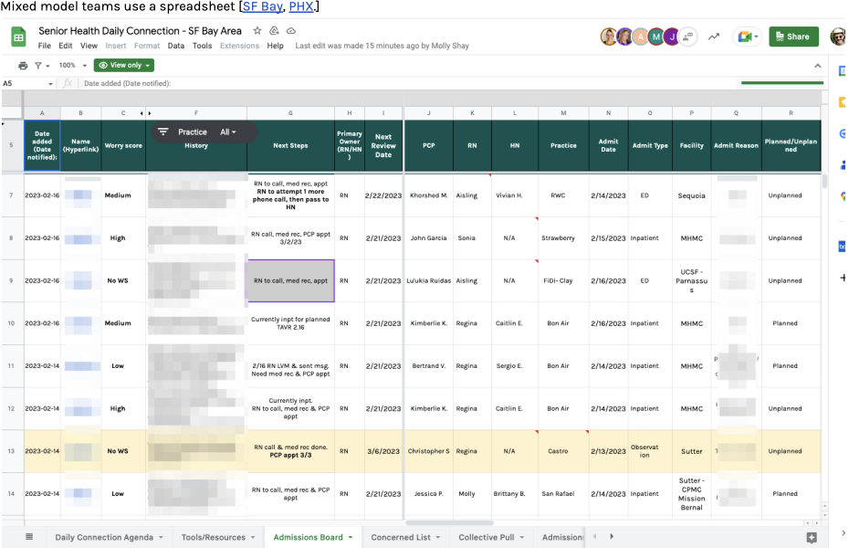
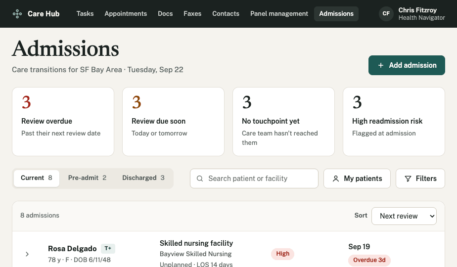

- AI product design
- Workflow automation
- Healthcare operations
Giving bandwidth to understaffed care teams
An AI assistant to help care teams coordinate care from hospital to clinic. It reads hospital feeds, faxes and call notes, prepares the follow-up work, and leaves every decision with the care team.
- Client
- One Medical Admissions Board
- Delivered
- AI audit, copilot UX, autonomy model, pilot plan
- Status
- Concept; the board it extends shipped
ADDING AI AUTOMATION TO A TOOL PEOPLE RELY ON
ProcessStart from the workflow, not the model. I went back through the research to find which updates people typed by hand, then designed AI only where the data already existed.
-
01
AI opportunity audit
Every manual step on the board, was mapped to a system or process where automation made sense.
-
02
Copilot UX
A working prototype: the review queue, source evidence on every card, patient view, activity log.
-
03
Autonomy model
Suggest, Draft or Auto for each kind of work, with clinical decisions to keep the human in the loop.
-
04
Pilot plan
A low-risk first rollout, and the measures that decide how far it expands.
The starting point
The admissions board replaced a spreadsheet that seven teams had to keep current by hand. It gave everyone one place to see who was in the hospital, who owned them, and what had to happen before they went home.
But the way people used it didn't change much. Someone still had to notice an admission, type it in, chase the discharge summary, and write the next step.
StrategyStructure first. The shipped board gave every admission clean fields, owners and service standards, which is what an AI layer needs to act on.

Before · A shared spreadsheet
Admissions copied and pasted out of the chart, one handoff at a time.

Shipped · The admissions board
Built into the EHR, with owners, next steps and service standards on every admission.
Most of the updates already exist somewhere else
When I went through the research, most of the updates people typed into the board were already sitting in another system.
- ADT feedsHospitals send admission and transfer updates.
- FaxesDischarge summaries arrive by fax.
- Call notesNurses log every call.
StrategyChange the core object. The board transitions from a list of patients and becomes a tool for decision support.
The copilot
Every morning the copilot shows what changed overnight and what it has already prepared.
Keep scrolling to move through the working prototype.
StrategyOpen on the work, not the data. The first screen is a queue of prepared actions, so the team starts the day approving instead of searching.
Open the prototypeA queue of work that's ready to approve
- Admissions and transfers from ADT feeds move patients between the ER, observation, inpatient and skilled nursing stages on their own.
- Discharge summaries get read when the fax lands. Medication changes that don't match the chart are flagged for a nurse.
- Follow-ups are drafted to meet the service standards: a visit booked inside the 7-day window, or a text to a caregiver in their preferred language at the time they actually answer.
- Next steps get rewritten from a teammate's call note, ready for approval.
WhyEach item maps to a service standard the team is already measured on, so the AI works toward goals they recognize.
Every card shows its source
Each card explains why it's there and links to the source: the fax line, the call note, the feed event. You approve in one click, edit the draft, or dismiss it. Everything can be undone, and every action goes into an activity log.
WhyPeople approve faster when they can check the AI's work in one glance instead of reopening the chart.
Autonomy is a setting, not a leap of faith
Teams decide how much the AI does, one kind of work at a time.
- SuggestIt recommends, you act.
- DraftIt prepares everything, you approve.
- AutoIt acts and tells you.
A team might put records requests on Auto in week one and keep scheduling on Draft until they trust it. Clinical escalations and medication changes are locked. A person always decides those.
WhyTrust in a clinical setting gets earned one task at a time.
Closing the loop after discharge
Patients at highest risk in the first week at home, when most readmissions start. The copilot makes an automated check-in call around day seven. If a patient mentions new swelling or weight gain, it escalates to a nurse the same day and shows the exact words the patient used.
WhyPoint the AI at the moment with the most cost and risk, not the task that's easiest to automate.
VALIDATION
The testing plan:
- EVALUATE
- Run the copilot next to the current board for two weeks and compare what it drafts with what the team actually did.
- Pilot
- Start with the lowest-risk work. Pilot Auto on records requests and ADT status updates only, then track how often people undo those actions.
- Measure
- Reviews completed on time, the share of patients who meet all three service standards, and time from discharge to first touchpoint.
If those numbers move and the undo rate stays low, we expand. If they don't, the queue still gives us a clear record of where the AI and the care team disagree. That's the next round of research.
All patient data shown is fictionalized for demonstration.
Adding AI to your product?
I can find the manual work in your tool, design where AI takes it on, and set the controls that let your team trust it. You get a working prototype and a plan to pilot it safely.
Services on this project
- AI product design
- UX strategy
- Dashboard & workflow design
- Prototyping & validation